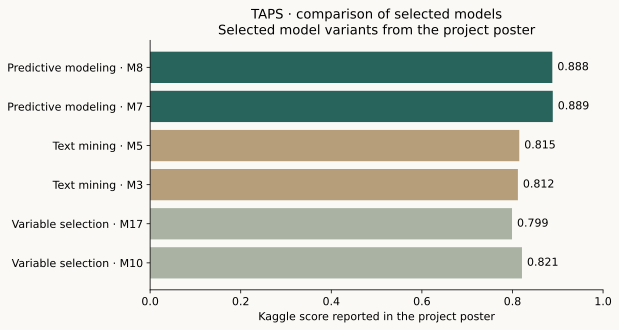
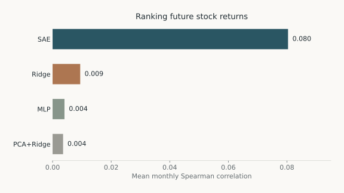

fRaud
A Random Forest classifier and R Shiny application that make transaction risk and customer patterns easier to examine.

Business analytics · Information systems
Reliable data.
Thoughtful models.
Better-informed decisions.
I’m a Purdue Business Analytics & Information Management graduate and Data Analyst at Infodat. I study how data quality, evaluation choices and business context shape useful analytical systems.
My research interests span machine learning, predictive analytics, AI-ready data and intelligent decision support.
Purdue University · BS with Distinction, 2026
Based in Houston, Texas
Data quality & management
Machine learning evaluation
Intelligent decision support
Each case study presents the research question, methods, and findings, with a link to the source code.
A Random Forest classifier and R Shiny application that make transaction risk and customer patterns easier to examine.
Studying how weather and academic timing relate to ridership across selected routes and periods.

Comparing structured prediction, text exploration and variable selection to support classification across six grief-journey stages.

A supervised autoencoder tested against linear and neural baselines through expanding-window equity-return backtests.

Exploring LVMUY prices with trend decomposition, moving averages, ARIMA and lagged-price regression.

Building an Accumulation/Distribution Line indicator in R and testing how smoothing windows and stock selection shape a price–volume divergence strategy.

Research direction
I’m interested in systems that help analysts choose data preparation and evaluation methods that reflect the decision at hand.
More about my background →Get in touch
For conversations about research, data quality and applied machine learning.
thesuncyrus@gmail.com ↗